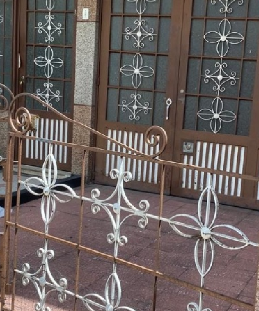
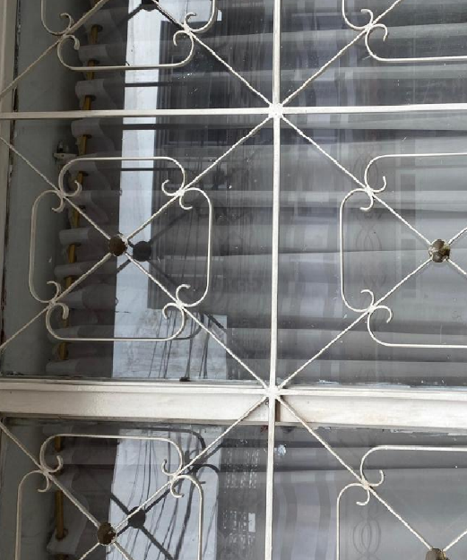
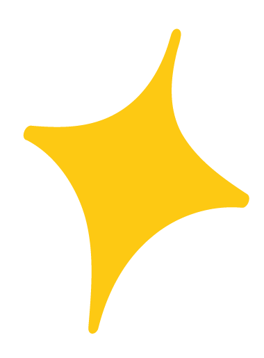

Bogotá aprendió a protegerse detrás de las rejas. Aunque hoy parecen parte natural del paisaje urbano, su presencia tiene raíces históricas.
Su uso se expandió por motivos de seguridad y protección. Hoy hacen parte de la identidad visual de muchos barrios bogotanos.